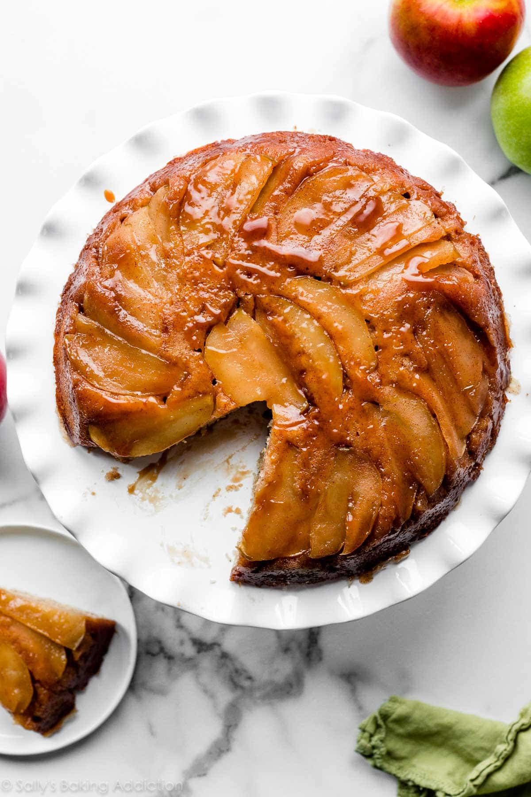

Apple Upside Down Cake

"Is it a pie or a cake? Who knows?"
A delicious dessert for fall or winter that combines a cinnamon-spiced cake with buttery caramelized apples.
Essentially two desserts in one!
Ingredients
Cake
- 1 and 1/2 cups all purpose flour
- 1 and 1/2 teaspoons baking powder
- 1 and 1/2 teaspoons ground cinnamon
- 1/4 teaspoon ground nutmeg
- 1/2 teaspoon salt
- 1/2 cup unsalted butter (softened to room temp)
- 1/2 cup granulated sugar
- 1/2 cup packed light or dark brown sugar
- 2 large eggs (at room temp)
- 1 teaspoon pure vanilla extract
- 6 tablespoons while milk (at room temp)
Topping
- 6 tablespoons unsalted butter
- 1/2 cup packed light or dark brown sugar
- 1/4 teaspoon ground cinnamon
- 1/4 teaspoon pure vanilla extract
- 2 medium apples (peeled and sliced into 1/4 inch slices)
Instructions
Preheat oven to 350 degress F or 177 degrees C
Preparing the topping
- Combine butter and brown sugar together in small sauce pan over medium heat
- Whisk occasionally until butter has melted
- Cook, whisking constantly, for 1 minute as mixture thickens
- Remove from heat and whisk in the cinnamon and vanilla extract
- Pour into an ungreased 9x2 inch pie dish or round cake pan (make sure the dish is atleast 2 inches deep)
- Arrange the apple slices neatly on top, overlapping where necessary
- Place pan in the refridgerator for a few minutes as you prepare the cake batter
Making the cake
- Whisk the flour, baking powder, cinnamon, nutmeg, and salt together
- Set this aside
- Using a handheld or stand mixer with a paddle/whisk attachment, beat the butter on high speed until smooth and creamy
- Add both sugars and beat on high speed until creamed together
- Scrap down the sides and up the bottom of the bowl with a rubber spatula as needed
- On high speed, beat in the eggs and vanilla extract until combined
- Scrape down the sides and up the bottom of the bowl as needed
- Pour the dry ingredients into the wet ingredients
- Turn the mixer onto low speed and as the mixer runs, slowly pour in the milk
- Beat on low speed just until all of the ingredients are combined
- Do not over-mix (You may need to whisk it all by hand to make sure there are no lumps)
- Remove topping from the refridgerator
- Pour and spread cake batter evenly over topping
- Bake for 40-46 minutes, tenting foil on top of the cake halfway through bake time to prevent the top from over-browning
- The cake is done when a toothpick inserted into the center of the cake comes out mostly clean
- Remove cake from the oven and cool on a wire rack for just 15 mintues
- Invert the slightly cooled cake onto a cake stand or serving plate
- Some of the juices from the topping will seep over the sides - that's ok
- You can slice and serve the cake warm, but the slices will be messy
- Ideally, letting the cake fully cool gives the best results
- Do not refridgerate the cake to speed up this process
- Cover leftover slices and store for up to 3 days in refridgerator or 3 months in the freezer